Comprendre
BEX REPÈRES — Je situe les grands repères géographiques
Banque de connaissances · 4e · transversale, toute l'année
Objectif de la démarche : Localiser un lieu revient constamment à préciser son emplacement par rapport à des repères connus ; un nom géographique impossible à positionner géographiquement demeure une notion abstraite.
La méthode
— Cette banque n'entraîne pas un savoir-faire nouveau : elle sert à apprendre des lieux et à savoir les placer. C'est une banque de connaissances.
— Elle est découpée en blocs. Un bloc = une liste de repères à connaître par cœur + deux cartes d'entraînement.
— Tu t'entraînes autant de fois que tu veux : coche une case à chaque essai à l'écrit.
— À l'interro-brique, tu reçois un fond de carte et la consigne d'un bloc. Si tu réussis, tu passes au bloc suivant. Si tu ne réussis pas, tu refais le même bloc la fois suivante.
— Un bloc réussi reste disponible : il peut revenir plus tard dans l'année, au rituel d'ouverture d'un chapitre de géographie.
Pour chaque lettre, dites ce qu'elle veut dire, puis retournez la carte.
Je relis la liste. Je cherche la forme du continent, du pays ou de la mer AVANT d'écrire quoi que ce soit.
Je fais ma marque au bon endroit, puis j'écris le nom à l'horizontale, sans faute.
Je compte : ai-je autant de noms que la consigne en demande ? Je relis chaque nom.
Ils sont les mêmes pour tous les blocs de la banque.
L'exemple corrigé
BLOC A Continents et océans · entre en S1 — réactivation de la 5e
Consigne : Place et nomme les 6 continents et les 5 continents.
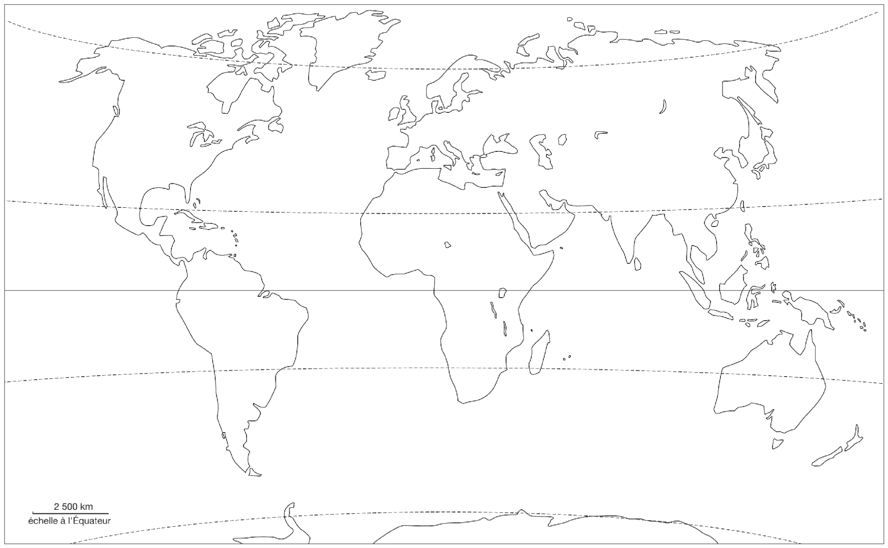
Fond de carte à compléter.
La carte modèle
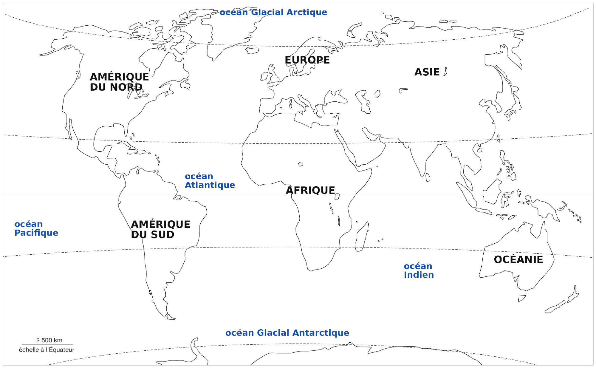
Correction du bloc A.
BLOC A Continents et océans · entre en S1 — réactivation de la 5e
Ce que je dois savoir placer par cœur
Les 6 continents — Afrique · Amérique du Nord · Amérique du Sud · Asie · Europe · Océanie
Les 5 océans — océan Pacifique · océan Atlantique · océan Indien · océan Glacial Arctique · océan Glacial Antarctique
S'entraîner
Exercice A.1 — Place et nomme les 6 continents.
Exercice A.2 — Place et nomme les 5 océans, puis 3 continents de ton choix.
BLOC B Les lignes et les zones · entre en S2 — réactivation de la 5e
Ce que je dois savoir placer par cœur
Les 5 lignes — l'équateur · le tropique du Cancer · le tropique du Capricorne · le cercle polaire arctique · le cercle polaire antarctique
Les 3 sortes de zones — la zone chaude · les zones tempérées · les zones froides
Voir la correctionMasquer la correction
BLOC A Continents et océans
Correction du bloc A — Continents et océans.
BLOC B Les lignes et les zones
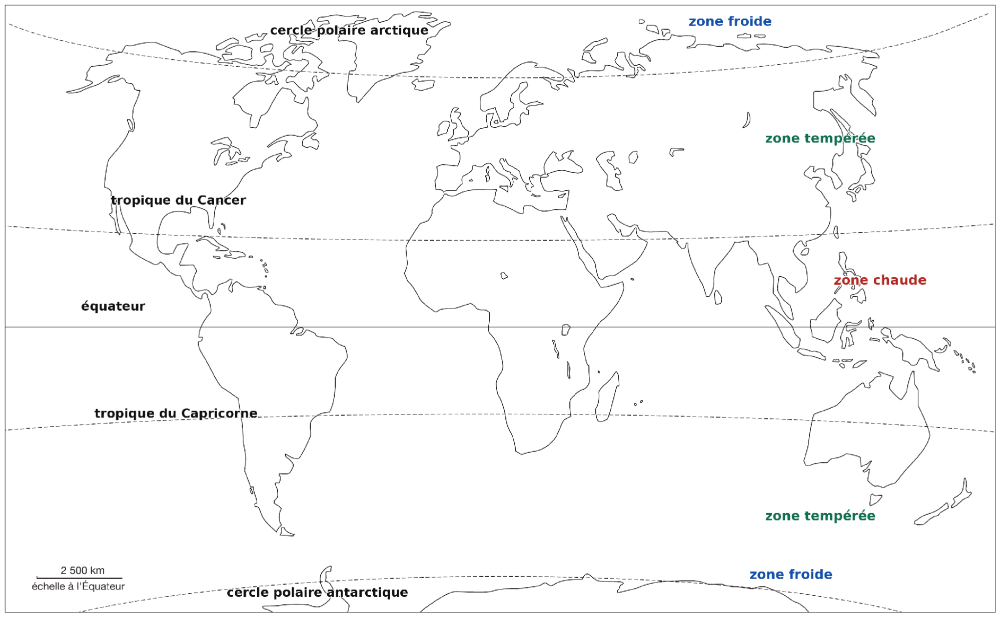
BLOC C Le commerce atlantique au XVIIIe siècle
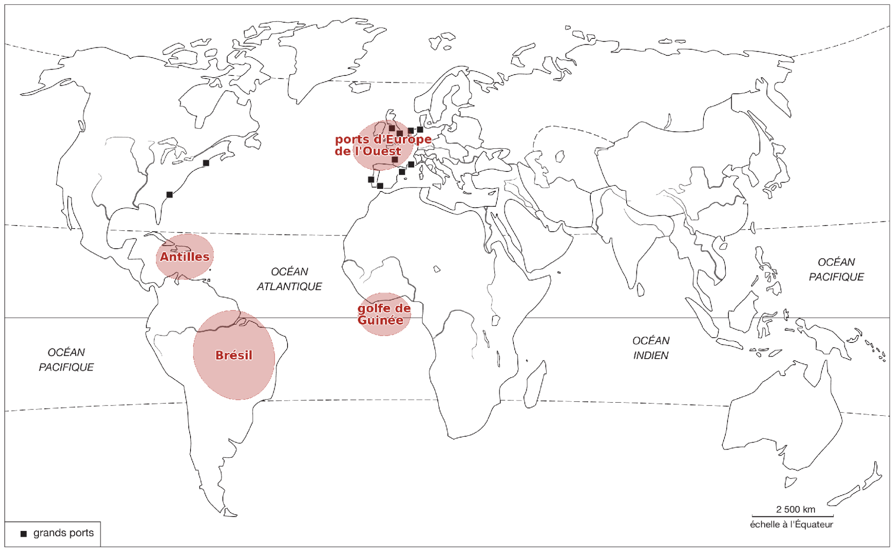
BLOC D Les grands États du monde
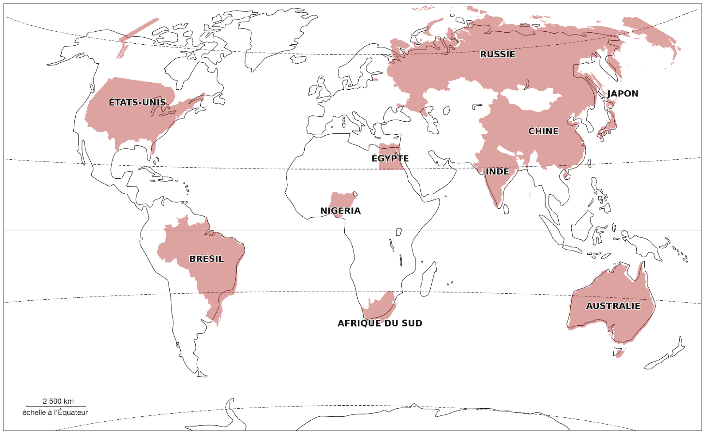
BLOC E La France et l'Union européenne
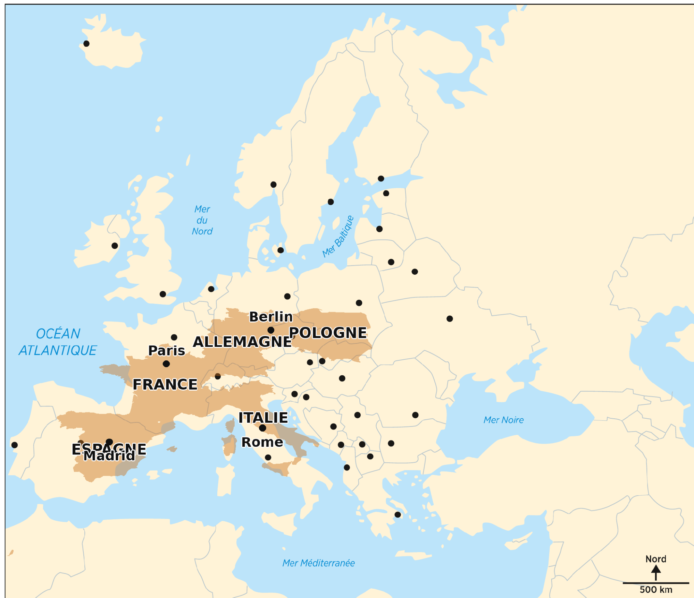
Exercice B.1 — Trace et nomme les 5 lignes.
Exercice B.2 — Trace l'équateur et les deux tropiques, puis colorie et nomme la zone chaude et les deux zones tempérées.
BLOC C Le commerce atlantique au XVIIIe siècle · entre en S3 — chapitre H1
Ce que je dois savoir placer par cœur
Les 3 ports négriers européens — Nantes · Bordeaux · Liverpool
Les 3 espaces — le golfe de Guinée · les Antilles · le Brésil
Exercice C.1 — Place et nomme les 3 ports négriers européens.
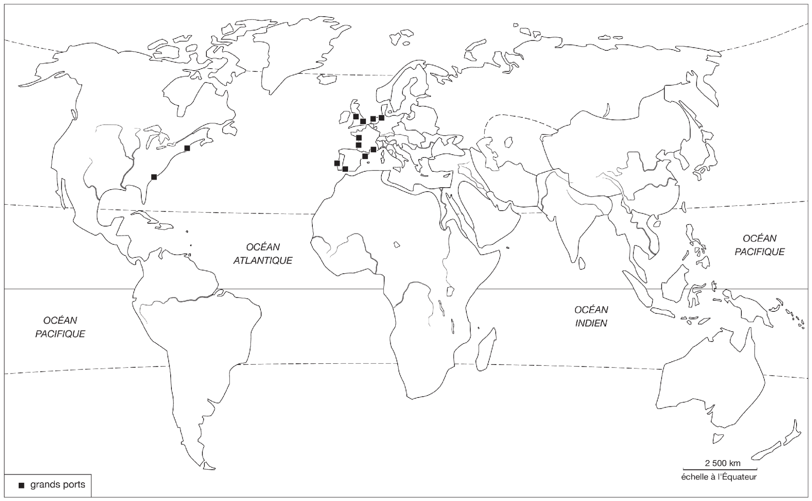
Exercice C.2 — Place et nomme les 3 ports, le golfe de Guinée, les Antilles et le Brésil.
BLOC D Les grands États du monde · entre en S4
Ce que je dois savoir placer par cœur
Les 10 États — la Chine · l'Inde · les États-Unis · le Brésil · la Russie · le Nigeria · l'Égypte · l'Afrique du Sud · le Japon · l'Australie
Exercice D.1 — Colorie et nomme 5 de ces États, situés sur au moins 3 continents différents.
Exercice D.2 — Colorie et nomme les 10 États.
BLOC E La France et l'Union européenne · entre en S5
Ce que je dois savoir placer par cœur
Les 5 États — la France · l'Allemagne · l'Espagne · l'Italie · la Pologne
Les 4 capitales — Paris · Berlin · Madrid · Rome
Exercice E.1 — Colorie et nomme les 5 États.
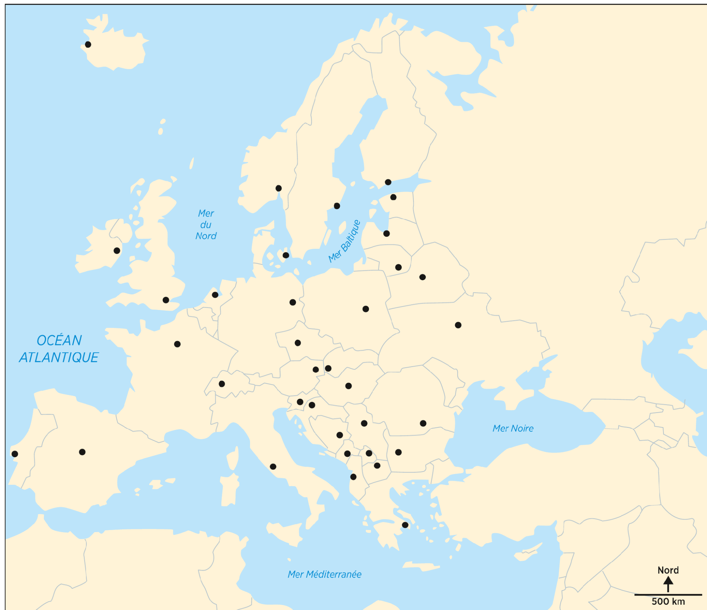
Exercice E.2 — Place et nomme les 4 capitales, sur les points déjà tracés.
BLOC F Villes globales et mégalopoles · entre en S7 — chapitre G1
Ce que je dois savoir placer par cœur
Les 6 villes globales — New York · Londres · Paris · Tokyo · Shanghai · Singapour
Les 3 mégalopoles — la mégalopole japonaise · la mégalopole nord-américaine · la mégalopole européenne
Voir la correctionMasquer la correction
Correction du bloc E — La France et l'Union européenne.
BLOC F Villes globales et mégalopoles
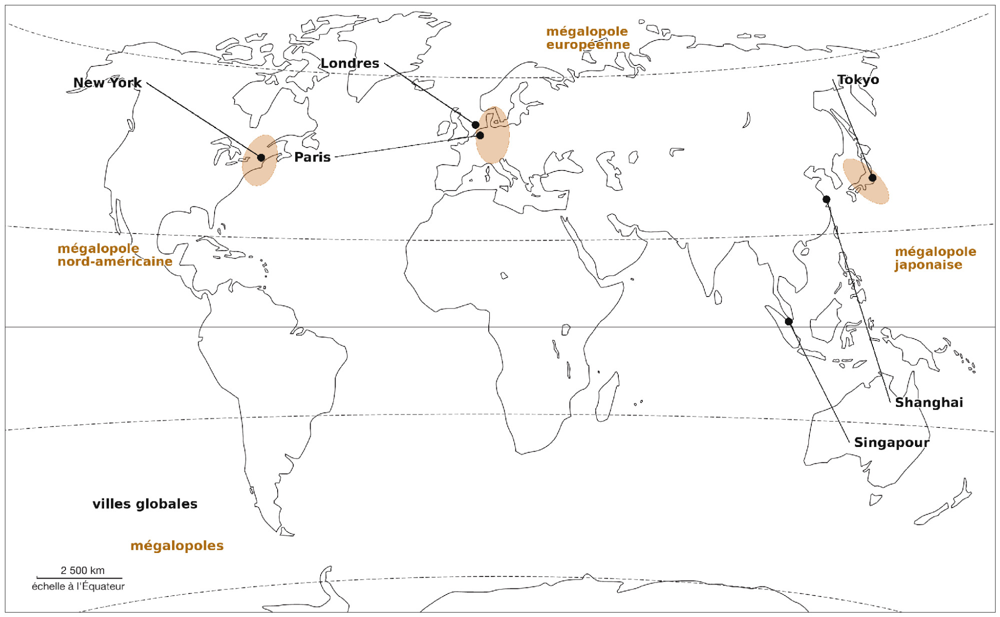
Exercice F.1 — Place et nomme les 6 villes globales.
Je coche à chaque fois que je m'entraîne à faire l'exercice à l'écrit : □ □ □ □
Exercice F.2 — Situe les 3 mégalopoles, puis place 3 villes globales.
Je coche à chaque fois que je m'entraîne à faire l'exercice à l'écrit : □ □ □ □
BLOC G Les grandes métropoles du Sud · entre en S8 — chapitre G1
Ce que je dois savoir placer par cœur
Les 6 métropoles — Lagos · Mumbai · São Paulo · Le Caire · Mexico · Jakarta
Voir la correctionMasquer la correction
Correction du bloc F — Villes globales et mégalopoles.
BLOC G Les grandes métropoles du Sud
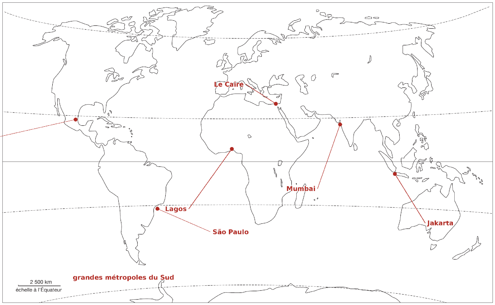
BLOC H Les États-Unis dans la mondialisation
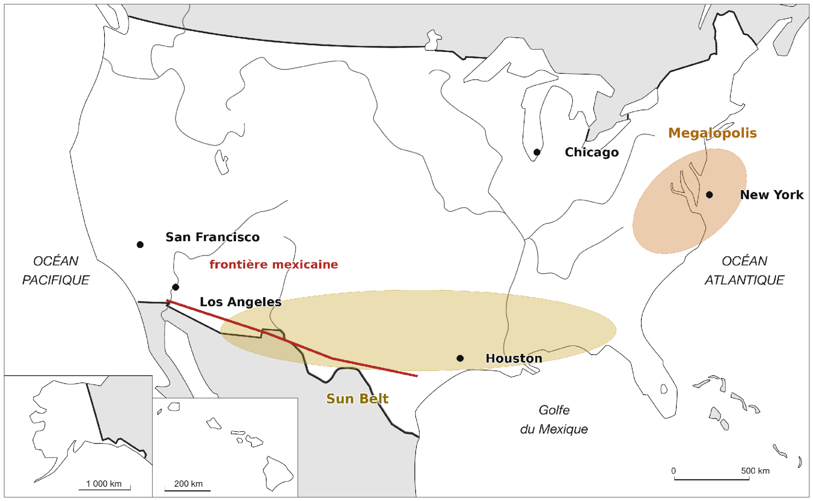
Exercice G.1 — Place et nomme les 6 métropoles du Sud.
Je coche à chaque fois que je m'entraîne à faire l'exercice à l'écrit : □ □ □ □
Exercice G.2 — Place 3 métropoles du Sud et 3 villes globales du bloc F.
Je coche à chaque fois que je m'entraîne à faire l'exercice à l'écrit : □ □ □ □
BLOC H Les États-Unis dans la mondialisation · entre en S15 — chapitre G2
Ce que je dois savoir placer par cœur
Les 3 espaces — la Megalopolis · la Sun Belt · la frontière mexicaine
Les 5 métropoles — New York · Los Angeles · Chicago · Houston · San Francisco
Exercice H.1 — Place et nomme les 5 métropoles.
Je coche à chaque fois que je m'entraîne à faire l'exercice à l'écrit : □ □ □ □
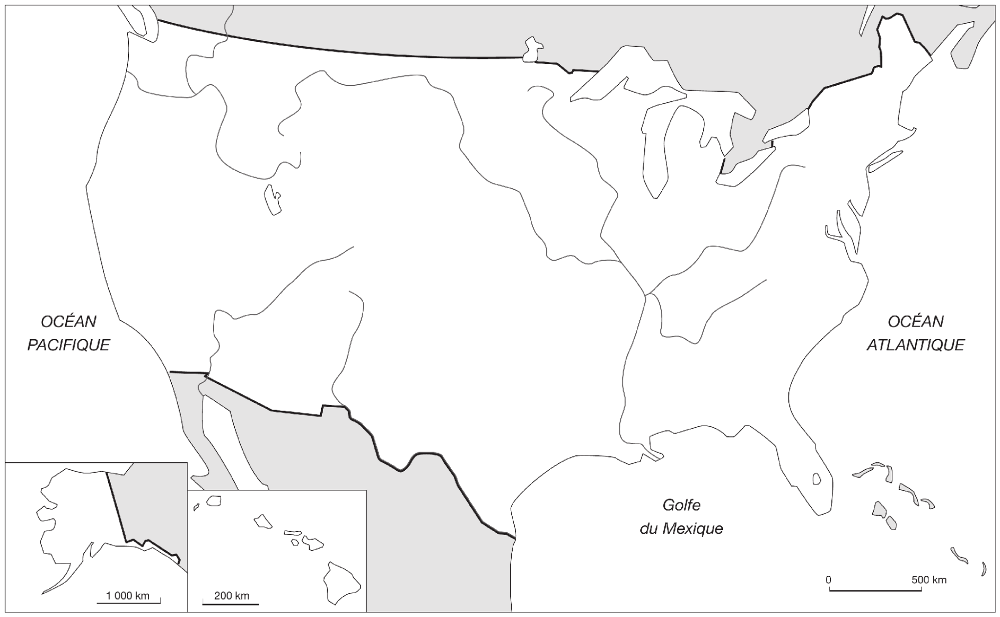
Exercice H.2 — Situe la Megalopolis, la Sun Belt et la frontière mexicaine, puis place 2 métropoles.
BLOC I Mers, littoraux et routes maritimes · entre en S20 — chapitre G3
Ce que je dois savoir placer par cœur
Les 3 grandes façades maritimes — la Northern Range · la façade asiatique · la façade nord-américaine
Les 6 passages stratégiques — le détroit de Gibraltar · le canal de Suez · le détroit de Bab el-Mandeb · le détroit d'Ormuz · le détroit de Malacca · le canal de Panama
Voir la correctionMasquer la correction
Correction du bloc H — Les États-Unis dans la mondialisation.
BLOC I Mers, littoraux et routes maritimes
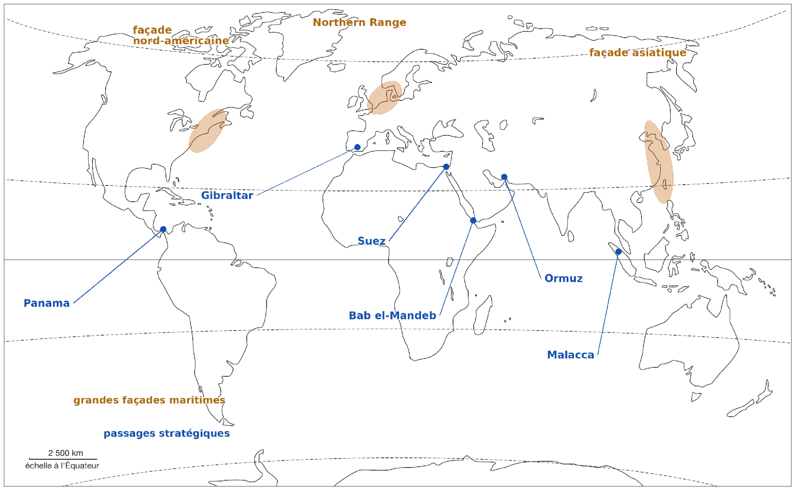
Exercice I.1 — Place et nomme les 6 passages stratégiques.
Exercice I.2 — Situe les 3 grandes façades maritimes, puis place 3 passages stratégiques.
BLOC J Le grand ensemble africain · entre en S25 — chapitre G4
Ce que je dois savoir placer par cœur
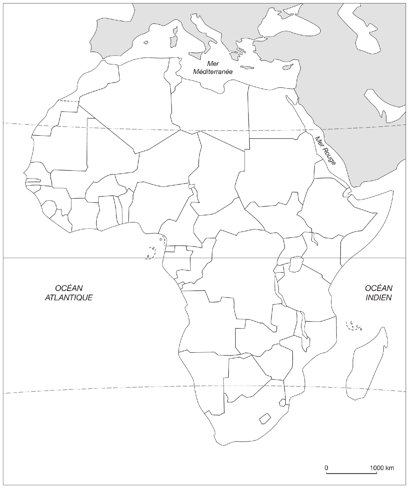
Les 4 espaces — le Sahara · le Sahel · le golfe de Guinée · la Corne de l'Afrique
Les 5 États — le Nigeria · l'Égypte · l'Afrique du Sud · la RDC · l'Éthiopie
Voir la correctionMasquer la correction
Correction du bloc I — Mers, littoraux et routes maritimes.
BLOC J Le grand ensemble africain
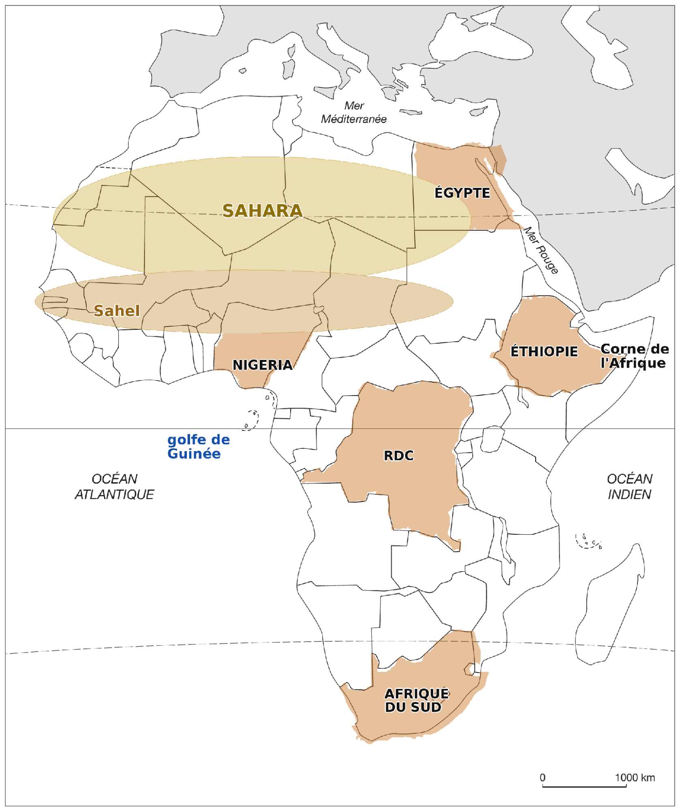
Exercice J.1 — Situe et nomme les 4 espaces.
Exercice J.2 — Colorie et nomme les 5 États.
Exercice non corrigé
Pas de correction : tu échanges ta feuille avec ton voisin ou ta voisine et vous vous évaluez avec les trois critères de la page 1.
BILAN Je mélange les blocs
Consigne : Place et nomme sur le planisphère : l'océan Pacifique, l'Amérique du Nord, New York, la mégalopole japonaise, le canal de Suez, le Sahel, et nomme le tropique du Cancer.
Je coche à chaque fois que je m'entraîne à faire l'exercice à l'écrit : □ □ □ □
Les corrections
Voir la correctionMasquer la correction
Pour aller plus loin
Sur un seul planisphère, place les 3 mégalopoles, les 3 grandes façades maritimes et les 6 passages stratégiques.
C'est la carte de la mondialisation en un seul dessin. Ajoute ensuite les 6 villes globales.